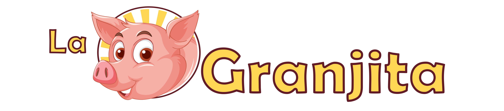
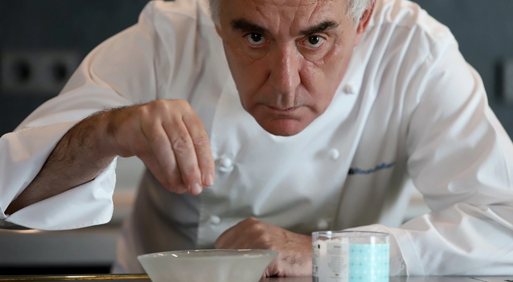
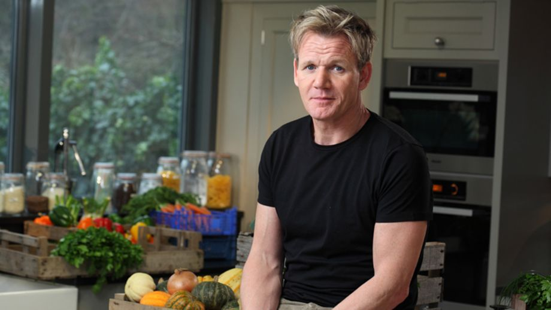
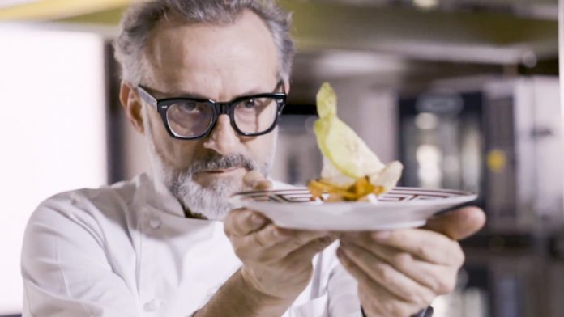
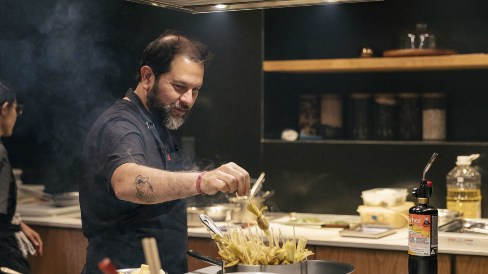

Somos una empresa familiar fundada el 31 de julio de 1988, con alto
conocimiento en la producción y venta de comidas rápidas, la
experiencia adquirida a través de los años, nos da el conocimiento
para valorar la importancia del cliente, quien es el motivo de
nuestros esfuerzos, y así llegar a ustedes con la seguridad de poder
ofrecerles nuestros productos de excelente calidad con responsabilidad
y cumplimiento.
Mision
Tiene como misión darle la excelencia a nuestros productos de comidas
rápidas con alta calidad, nutritivos sanos y frescos, en función de
satisfacer las necesidades del consumo, proporcionando en forma
permanente bienestar y calidad de vida. Entregamos a nuestros
consumidores los productos que ellos prefieren y eligen por nuestra
calidad y presentación.
Vision
Tiene como visión consolidarnos como la mejor empresa a nivel
nacional, en cuanto a la producción y venta de comidas rápidas,
apoyándonos en instalaciones con la más alta tecnología para el manejo
de nuestros productos y contamos con personal altamente calificado
manteniendo nuestro riguroso y estricto control de calidad.
Massimo Bottura
Nacido y criado en Modena, en la región italiana de Emilia Romagna,
Bottura desarrolló un interés por la cocina desde muy joven después de
ver a su madre, abuela y tía en la cocina preparando comidas
familiares.


Ferran Adrià
Ferran Adrià Acosta (Hospitalet de Llobregat, Barcelona, 14 de mayo de
1962) es un cocinero español. Revolucionó el mundo de la gastronomía y
lo introdujo en una nueva era. La revista norteamericana Time incluyó
a Adrià en la lista de los 100 personajes más innovadores del mundo en
el año 2004.

Gordon Ramsay
Gordon James Ramsay (Johnstone, Escocia; 8 de noviembre de 1966) es un
chef, dueño de restaurantes y presentador de televisión británico. En
toda su carrera gastronómica ha sido condecorado con 17 estrellas
Michelin, de las que hoy mantiene siete.12 Además de sus facetas
culinarias, Ramsay es conocido por presentar programas de televisión y
espacios de telerrealidad sobre cocina.

Paul Bocuse
(Collonges-au-Mont-d'Or, Auvernia-Ródano-Alpes; 11 de febrero de
1926-ib.; 20 de enero de 2018)1 fue un chef francés, considerado el
mejor chef del siglo xx y uno de los principales cocineros de la
historia fundador e impulsor de la nouvelle cuisine. A partir de 1959
hizo famoso mundialmente el antiguo restaurante familiar.

Enrique Olvera
Olvera estudió en el Culinary Institute of America de Nueva York. En
2000, en la ciudad de México, inauguró Pujol, restaurante situado en
2013 en el lugar 13 entre los 50 mejores restaurantes del mundo y el
tercer en Latinoamérica, de acuerdo con la lista de San Pellegrino.1
En 2012 había sido clasificado en el lugar 36 en el mundo.2